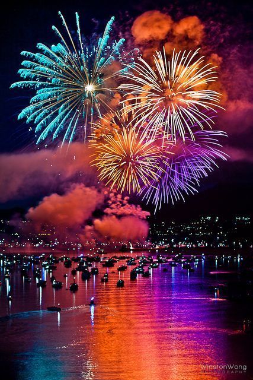
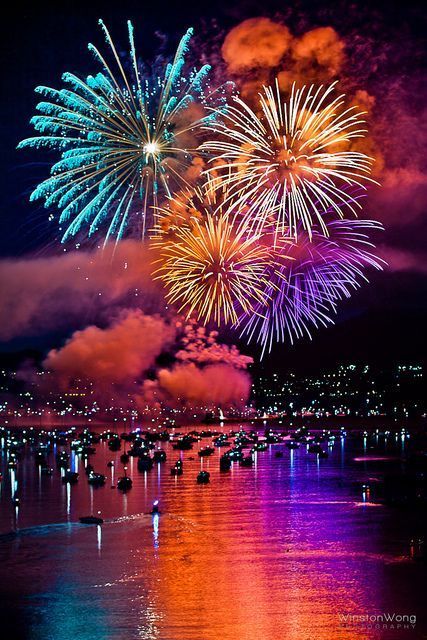

Events are a big part of every location. They help civilians loosen up and have a good time, taking a breather from their tedious and exhausting workloads. Moreover, events are made to bring people together as a community to celebrate occurances that have occurred in the location once upon a time.
CELEBRATION OF LIGHT
The celebration of light is a major event in Vancouver, that takes place in the summer time, on the famous English Bay beach. Beautiful fireworks light up the dark sky over the beach, while down on the beach there is music sounding with people really having a good time. The celebration goes on for three nights in a row, at the end of July. Definately attend one of the celebration nights of this event and witness a spectacular display of fireworks.
 

BMO VANCOUVER MARATHON
Named the largest race in the whole of Canada, BMO Vancouver Marathon is a race that passes along city landmarks, parks and beaches and more, with most of the view seen being the seemingly endless ocean waters. The race has something for everyone, a 8km race for those who cannot manage the whole race, a kid's race, as well as a half-marathon, and runners from all over the world are welcome to take part. Along the race course are sources of entertainment to keep supporters, as well as the participants passing by, in great spirit. The race occurs on the first Sunday of May each year so mark the date on your calendars !


THE PNE FAIR
This summer event has been around since the 1910s. It involves exciting shows, exhibits, amusement park rides, concerts, and so much more. To this day, the Pacific National Exhibition (PNE), is the most attended annual ticketed event in British Columbia and the location of performance for well known artists. This event truley broadcasts the city of Vancouver to the rest of Canada in a magnificent way. The fair commences around mid-August and ends around the early days of September, so everyone has time to prepare to go atleast once during this time.


Events are a big part of every location. They help civilians loosen up and have a good time, taking a breather from their tedious and exhausting workloads. In addition, events are made to bring people together as a community to celebrate occurances that have occurred in the location once upon a time.